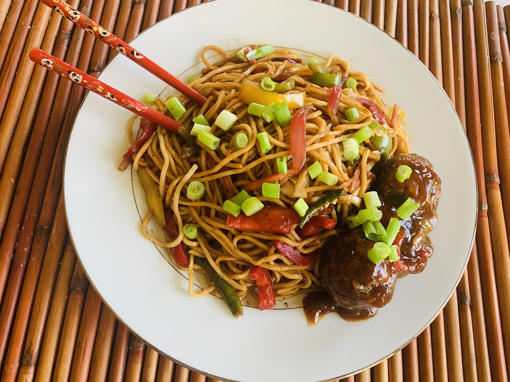

Home
Contact
About
Location
Menu
Welcome to
Rohit Chinese Corner.
Our Delicious Menu: Explore Exquisite Dishes
Savor the Flavor: Fried Rice
Fried rice is a popular Asian dish made from cooked rice stir-fried with a variety of ingredients.
It can be prepared with vegetables, eggs, meat (such as chicken, shrimp, or pork), and seasonings like soy sauce.
Fried rice is known for its savory and slightly crispy texture, making it a favorite at Chinese restaurants worldwide.
Fried rice is known for its versatility and can be customized to suit various tastes.

Hakka Noodles Delight
Hakka noodles are a type of Chinese noodles that have become popular in India, especially in Indo-Chinese cuisine.
These noodles are typically stir-fried with vegetables, sauces, and sometimes meat or tofu.
They are known for their slightly chewy texture and ability to absorb flavors from the ingredients they are cooked with.
Hakka noodles are often seasoned with soy sauce, chili sauce, and various spices to create a spicy and flavorful dish.
Chicken Lollipops: Irresistible Appetizers
Chicken lollipop is a popular appetizer in Indian and Chinese cuisine, often served in restaurants and as a street food.
It is made by deep-frying chicken wingettes or drumettes after marinating them in a spicy batter.
The chicken pieces are typically frenched, which means the meat is pushed down to create a lollipop-like appearance with a handle.
They are known for their spicy and tangy flavor, often accompanied by a dipping sauce.
Soup Sensations: A Warm Start
Soup is a liquid food typically served as an appetizer or main course.
It can be made with a variety of ingredients, including vegetables, meat, poultry, seafood, and legumes.
Common types of soup include chicken noodle soup, tomato soup, miso soup, and hot and sour soup.
Soups are often seasoned with herbs, spices, and seasonings to enhance their flavor.
Chicken Chilly
Chilli chicken is a popular Indo-Chinese dish made with battered and deep-fried chicken pieces.
The crispy chicken is then tossed in a flavorful sauce with chili peppers, garlic, and soy sauce.
It's known for its spicy and tangy taste.
Vegetable Manchurian
Vegetable Manchurian is a vegetarian Indo-Chinese dish.
It consists of deep-fried vegetable balls served in a savory sauce with flavors of ginger, garlic, and soy sauce.
It can be served as a dry appetizer or with gravy as a main course.
Omelette
An omelette is a simple and quick dish made by beating eggs and cooking them in a frying pan.
It can be filled with various ingredients like cheese, vegetables, or ham.
Omelettes are versatile and can be served for breakfast or as a light meal.
Paneer Chilly
Paneer chilli is a popular Indian vegetarian dish made with paneer (Indian cottage cheese).
The paneer is typically coated in a spicy batter, deep-fried, and then tossed in a flavorful sauce with bell peppers and onions
It's known for its fusion of Indian and Chinese flavors.
Fried Rice Recipe
Ingredients:
2 cups cold cooked rice
1 cup mixed vegetables (e.g., carrots, peas, bell peppers)
1/2 cup diced chicken, shrimp, or tofu (optional)
2 cloves garlic, minced
1 tablespoon ginger, minced
2 tablespoons vegetable oil
2 tablespoons light soy sauce
Salt and pepper to taste
Scrambled eggs (optional)
Instructions:
Heat the vegetable oil in a wok or large pan over high heat.
Add minced garlic and ginger and stir-fry for about 30 seconds until fragrant.
Add the diced protein (if using) and cook until it's no longer pink or translucent.
Add the mixed vegetables and stir-fry for a few minutes until they begin to soften.
Push the ingredients to the side of the pan, making space in the center. If using eggs, scramble them in this space.
Add the cold cooked rice to the pan and stir-fry everything together. Break up any clumps of rice as you go.
Drizzle the soy sauce over the rice and continue to stir-fry for a few more minutes until the rice is heated through and has absorbed the flavors.
If you cooked the eggs separately, add them now and mix them into the rice.
Season with salt and pepper to taste.
Serve hot and garnish with chopped green onions, if desired.
Basic Hakka Noodles Recipe
Ingredients:
200g Hakka noodles
1 cup mixed vegetables (e.g., carrots, bell peppers, cabbage)
1/2 cup diced chicken, shrimp, or tofu (optional)
1/2 cup diced chicken, shrimp, or tofu (optional)
2 cloves garlic, minced
1 tablespoon ginger, minced
2 tablespoons vegetable oil
2 tablespoons soy sauce
1-2 teaspoons chili sauce (adjust to your spice preference)
Salt and pepper to taste
Chopped cilantro or green onions for garnish
Instructions:
Cook the Hakka noodles according to package instructions until they are al dente. Rinse under cold water, drain, and set aside.
Heat the vegetable oil in a wide pan or wok over high heat.
Add minced garlic and ginger and stir-fry for about 30 seconds until fragrant.
Add diced protein (if using) and cook until it's no longer pink or translucent.
Add mixed vegetables and stir-fry for a few minutes until they start to soften.
Add the cooked noodles to the pan and toss them with the other ingredients.
Drizzle soy sauce and chili sauce over the noodles and continue to stir-fry for a few more minutes.
Season with salt and pepper to taste.
Garnish with chopped cilantro or green onions.
Serve hot and enjoy your Hakka noodles!
CHECK MENU